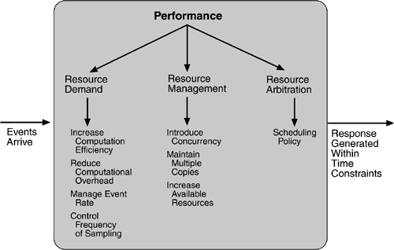

5.4 Performance Tactics
Recall from Chapter 4 that the goal of performance tactics is to generate a response to an event arriving at the system within some time constraint. The event can be single or a stream and is the trigger for a request to perform computation. It can be the arrival of a message, the expiration of a time interval, the detection of a significant change of state in the system's environment, and so forth. The system processes the events and generates a response. Performance tactics control the time within which a response is generated. This is shown in Figure 5.6. Latency is the time between the arrival of an event and the generation of a response to it.

After an event arrives, either the system is processing on that event or the processing is blocked for some reason. This leads to the two basic contributors to the response time: resource consumption and blocked time.
Resource consumption.
Resources include CPU, data stores, network communication bandwidth, and memory, but it can also include entities defined by the particular system under design. For example, buffers must be managed and access to critical sections must be made sequential. Events can be of varying types (as just enumerated), and each type goes through a processing sequence. For example, a message is generated by one component, is placed on the network, and arrives at another component. It is then placed in a buffer; transformed in some fashion (marshalling is the term the Object Management Group uses for this transformation); processed according to some algorithm; transformed for output; placed in an output buffer; and sent onward to another component, another system, or the user. Each of these phases contributes to the overall latency of the processing of that event. Blocked time.
A computation can be blocked from using a resource because of contention for it, because the resource is unavailable, or because the computation depends on the result of other computations that are not yet available.
- - Contention for resources.
Figure 5.6 shows events arriving at the system. These events may be in a single stream or in multiple streams. Multiple streams vying for the same resource or different events in the same stream vying for the same resource contribute to latency. In general, the more contention for a resource, the more likelihood of latency being introduced. However, this depends on how the contention is arbitrated and how individual requests are treated by the arbitration mechanism.
- - Availability of resources.
Even in the absence of contention, computation cannot proceed if a resource is unavailable. Unavailability may be caused by the resource being offline or by failure of the component or for some other reason. In any case, the architect must identify places where resource unavailability might cause a significant contribution to overall latency.
- - Dependency on other computation.
A computation may have to wait because it must synchronize with the results of another computation or because it is waiting for the results of a computation that it initiated. For example, it may be reading information from two different sources, if these two sources are read sequentially, the latency will be higher than if they are read in parallel.
With this background, we turn to our three tactic categories: resource demand, resource management, and resource arbitration.
RESOURCE DEMAND
Event streams are the source of resource demand. Two characteristics of demand are the time between events in a resource stream (how often a request is made in a stream) and how much of a resource is consumed by each request.
One tactic for reducing latency is to reduce the resources required for processing an event stream. Ways to do this include the following.
Increase computational efficiency.
One step in the processing of an event or a message is applying some algorithm. Improving the algorithms used in critical areas will decrease latency. Sometimes one resource can be traded for another. For example, intermediate data may be kept in a repository or it may be regenerated depending on time and space resource availability. This tactic is usually applied to the processor but is also effective when applied to other resources such as a disk.
Reduce computational overhead.
If there is no request for a resource, processing needs are reduced. In Chapter 17, we will see an example of using Java classes rather than Remote Method Invocation (RMI) because the former reduces communication requirements. The use of intermediaries (so important for modifiability) increases the resources consumed in processing an event stream, and so removing them improves latency. This is a classic modifiability/performance tradeoff.
Another tactic for reducing latency is to reduce the number of events processed. This can be done in one of two fashions.
Manage event rate.
If it is possible to reduce the sampling frequency at which environmental variables are monitored, demand can be reduced. Sometimes this is possible if the system was overengineered. Other times an unnecessarily high sampling rate is used to establish harmonic periods between multiple streams. That is, some stream or streams of events are oversampled so that they can be synchronized.
Control frequency of sampling.
If there is no control over the arrival of externally generated events, queued requests can be sampled at a lower frequency, possibly resulting in the loss of requests.
Other tactics for reducing or managing demand involve controlling the use of resources.
Bound execution times.
Place a limit on how much execution time is used to respond to an event. Sometimes this makes sense and sometimes it does not. For iterative, data-dependent algorithms, limiting the number of iterations is a method for bounding execution times.
Bound queue sizes.
This controls the maximum number of queued arrivals and consequently the resources used to process the arrivals.
RESOURCE MANAGEMENT
Even though the demand for resources may not be controllable, the management of these resources affects response times. Some resource management tactics are:
Introduce concurrency.
If requests can be processed in parallel, the blocked time can be reduced. Concurrency can be introduced by processing different streams of events on different threads or by creating additional threads to process different sets of activities. Once concurrency has been introduced, appropriately allocating the threads to resources (load balancing) is important in order to maximally exploit the concurrency.
Maintain multiple copies of either data or computations.
Clients in a client-server pattern are replicas of the computation. The purpose of replicas is to reduce the contention that would occur if all computations took place on a central server. Caching is a tactic in which data is replicated, either on different speed repositories or on separate repositories, to reduce contention. Since the data being cached is usually a copy of existing data, keeping the copies consistent and synchronized becomes a responsibility that the system must assume.
Increase available resources.
Faster processors, additional processors, additional memory, and faster networks all have the potential for reducing latency. Cost is usually a consideration in the choice of resources, but increasing the resources is definitely a tactic to reduce latency. This kind of cost/performance tradeoff is analyzed in Chapter 12.
RESOURCE ARBITRATION
Whenever there is contention for a resource, the resource must be scheduled. Processors are scheduled, buffers are scheduled, and networks are scheduled. The architect's goal is to understand the characteristics of each resource's use and choose the scheduling strategy that is compatible with it.
A scheduling policy conceptually has two parts: a priority assignment and dispatching. All scheduling policies assign priorities. In some cases the assignment is as simple as first-in/first-out. In other cases, it can be tied to the deadline of the request or its semantic importance. Competing criteria for scheduling include optimal resource usage, request importance, minimizing the number of resources used, minimizing latency, maximizing throughput, preventing starvation to ensure fairness, and so forth. The architect needs to be aware of these possibly conflicting criteria and the effect that the chosen tactic has on meeting them.
A high-priority event stream can be dispatched only if the resource to which it is being assigned is available. Sometimes this depends on pre-empting the current user of the resource. Possible preemption options are as follows: can occur anytime; can occur only at specific pre-emption points; and executing processes cannot be pre-empted. Some common scheduling policies are:
First-in/First-out.
FIFO queues treat all requests for resources as equals and satisfy them in turn. One possibility with a FIFO queue is that one request will be stuck behind another one that takes a long time to generate a response. As long as all of the requests are truly equal, this is not a problem, but if some requests are of higher priority than others, it is problematic. Fixed-priority scheduling.
Fixed-priority scheduling assigns each source of resource requests a particular priority and assigns the resources in that priority order. This strategy insures better service for higher-priority requests but admits the possibility of a low-priority, but important, request taking an arbitrarily long time to be serviced because it is stuck behind a series of higher-priority requests. Three common prioritization strategies are
- - semantic importance.
Each stream is assigned a priority statically according to some domain characteristic of the task that generates it. This type of scheduling is used in mainframe systems where the domain characteristic is the time of task initiation.
- - deadline monotonic.
Deadline monotonic is a static priority assignment that assigns higher priority to streams with shorter deadlines. This scheduling policy is used when streams of different priorities with real-time deadlines are to be scheduled.
- - rate monotonic.
Rate monotonic is a static priority assignment for periodic streams that assigns higher priority to streams with shorter periods. This scheduling policy is a special case of deadline monotonic but is better known and more likely to be supported by the operating system.
Dynamic priority scheduling:
- - round robin.
Round robin is a scheduling strategy that orders the requests and then, at every assignment possibility, assigns the resource to the next request in that order. A special form of round robin is a cyclic executive where assignment possibilities are at fixed time intervals.
- - earliest deadline first.
Earliest deadline first assigns priorities based on the pending requests with the earliest deadline.
Static scheduling.
A cyclic executive schedule is a scheduling strategy where the pre-emption points and the sequence of assignment to the resource are determined offline.
For Further Reading at the end of this chapter lists books on scheduling theory.
The tactics for performance are summarized in Figure 5.7.


|